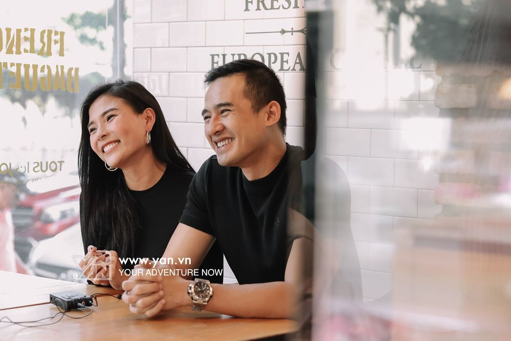

TRANG CHỦ
VIDEO
SAO
TRẺ
ĐẸP
VIDEO
Kỳ lạ
nghề "nhồi người" lên tàu điện ngầm tại Nhật Bản
Sao Thẳng Thắn:
AMEE học hỏi được nhiều thứ từ BLACKPINK
Võ Hoàng
Yến chơi lô tô, chụp ảnh thời trang ở khu cách ly

Lương
Thế Thành - Thúy Diễm dành lời khuyên cho các bạn lập gia đình
Công Ty Cổ Phần Công Nghệ Và Tầm Nhìn Yêu Âm Nhạc
Lầu 12, Tòa nhà Viettel, Số 285 Cách Mạng Tháng Tám,
Phường 12, Quận 10, TP. Hồ Chí Minh
Điện Thoại:
(+84) 2873 050 788. Email:
contact@yan.vn